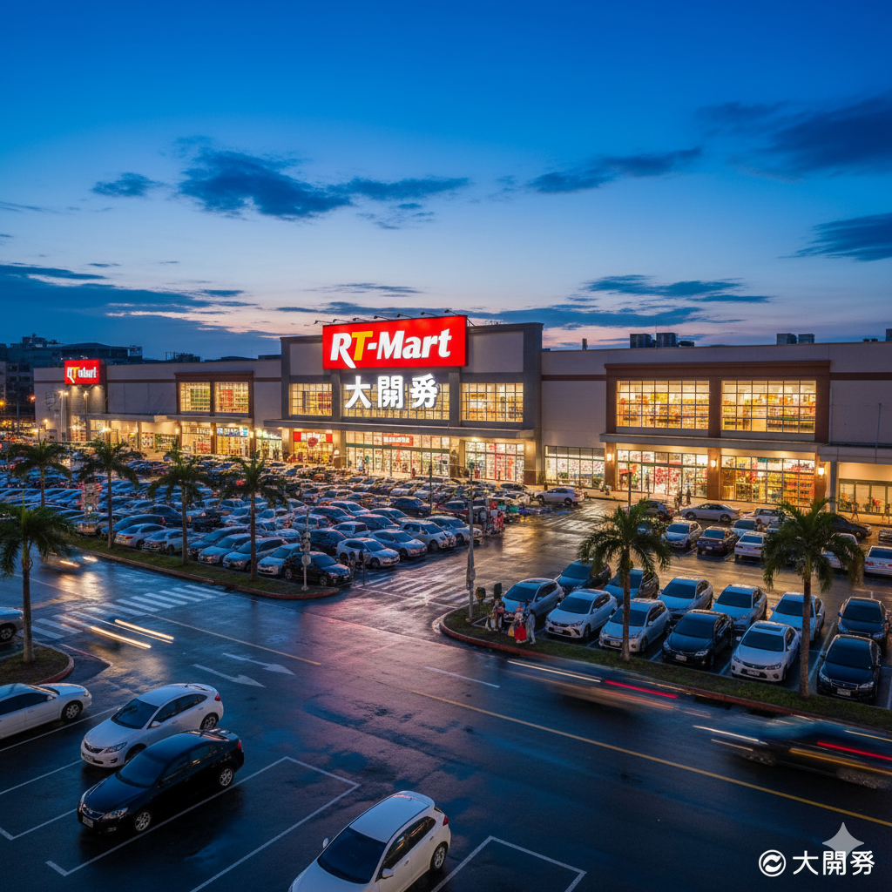
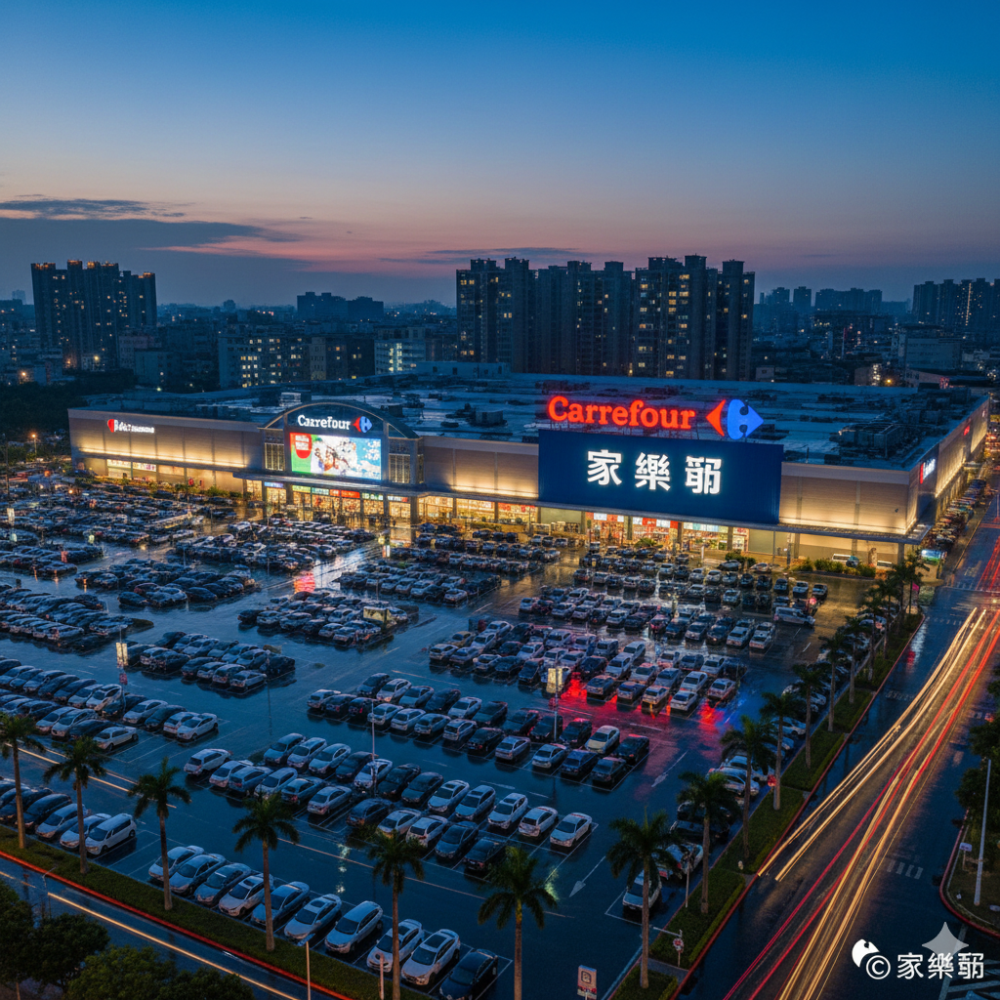

好市多 (Costco)
美式倉儲會員制霸主。堅持低毛利與 Kirkland Signature 自有品牌策略。

全聯體系 (含大潤發)
全台最大生鮮冷鏈集團。整合超市與量販，建立 PX Pay 支付生態圈。

進入詳細分頁
家樂福體系
統一集團全通路生態圈。領先推動食物轉型、有機專區與非籠飼雞蛋。

愛買 (a.mart)
遠東集團零售板塊。強調在地農業支持與精緻化的親子購物空間。
零售體系核心優勢摘要
| 體系 | 集團背景 | 核心優勢 |
|---|---|---|
| 好市多 | 美商直營 | 會員制量販、進口獨家商品 |
| 全聯體系 | 林敏雄家族 (併購大潤發) | 據點最密、生鮮採購力強 |
| 家樂福 | 統一集團 | 全通路布局、集團點數通用 |
| 愛買 | 遠東集團 | 在地化行銷、集團百貨資源 |